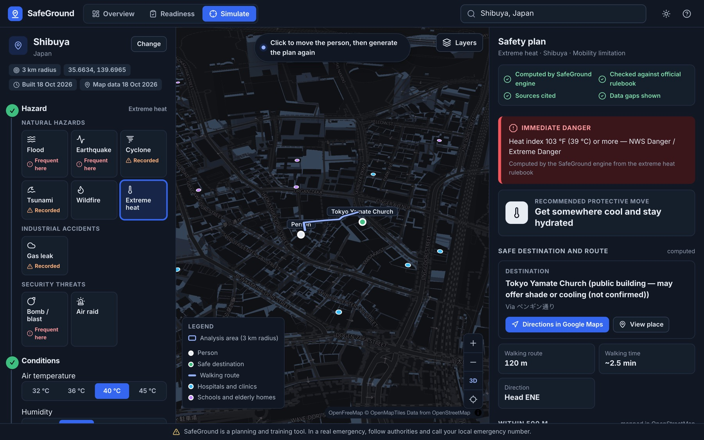
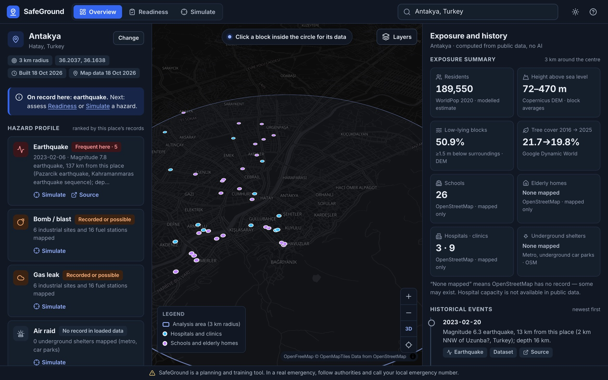
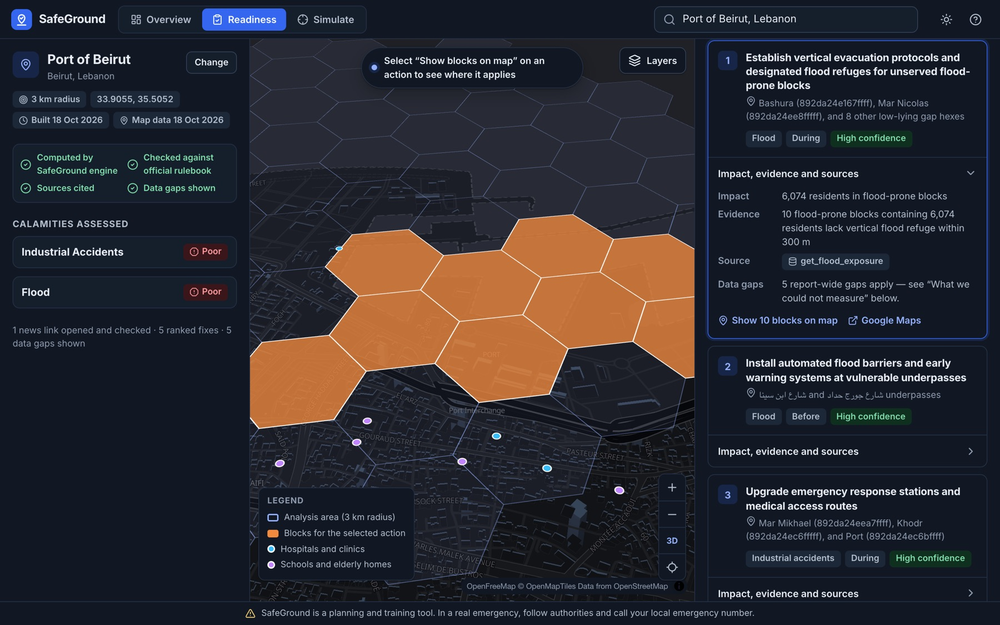
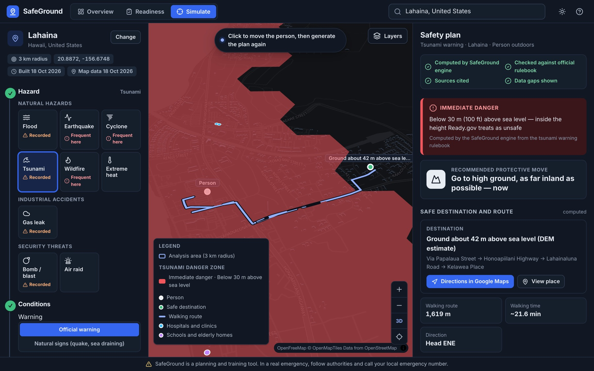
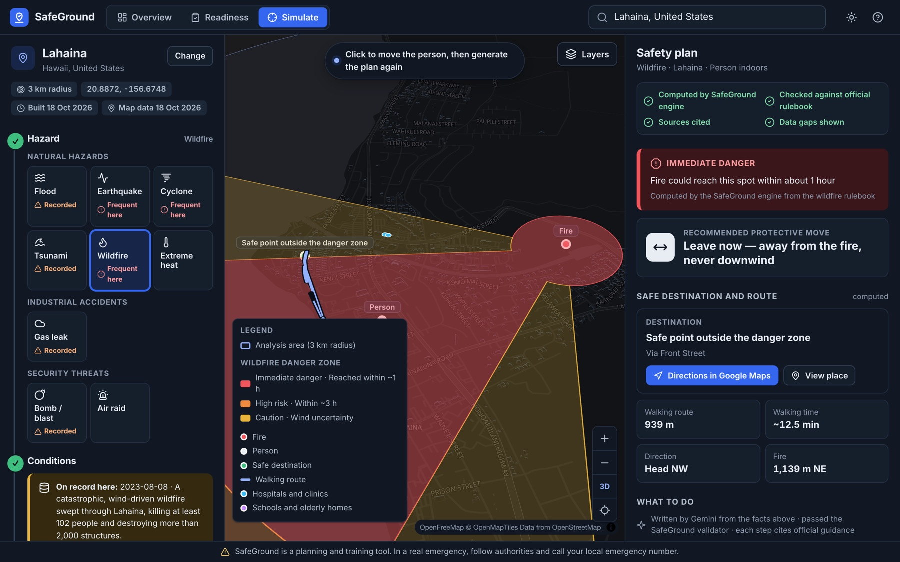
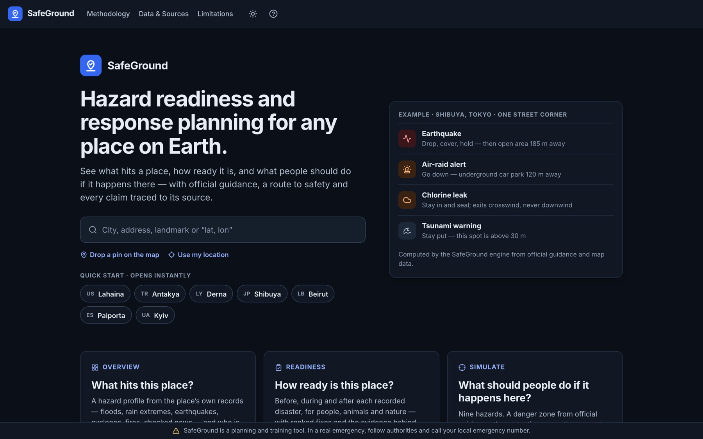
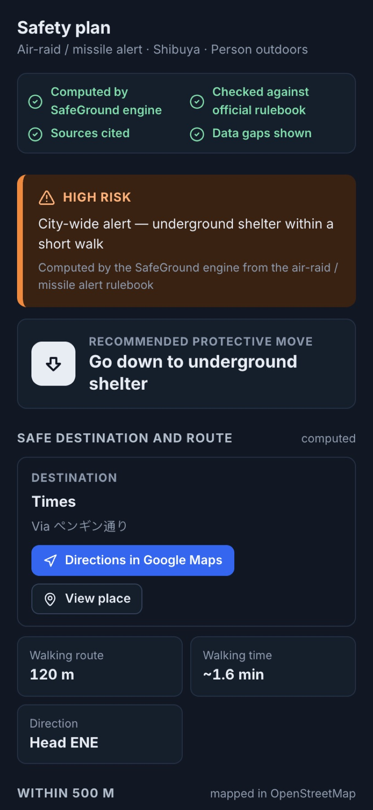

When shaking stops and a building is damaged: open area 185 m away.
Underground car park 120 m away (1.6 min walk).
Never go down — gas collects low. Exits crosswind, never downwind.
This spot is above 30 m (Ready.gov’s 100 ft) — follow officials.
For: city and district disaster teams · companies protecting sites and staff · schools and hospitals planning drills · NGOs pre-positioning relief · residents.
A planning and training tool: no alerts are sent, no personal data is collected, and nothing replaces official instructions.

Found: 6,074 residents in flood-prone blocks lack a nearby vertical refuge; 18 industrial sites within 4.2 km. Lahaina: no hospital mapped within 3 km; 0% of residents within a 1 km walk of a fire station; bare land 1.8% → 15.4% (2016 → 2025).

| Hazard | Danger computed from | Safe move and target | Guidance |
|---|---|---|---|
| Flood | Low land (DEM), surface water, rain; reported flooding overrides | Go up: tall building / high ground, no underpasses | State flood do’s and don’ts |
| Earthquake | Shaking now / after shaking | Drop, cover, hold; then nearest open area | Ready.gov (FEMA) |
| Cyclone | Surge-exposed vs wind-only blocks; Saffir-Simpson | Go up, or interior room | Ready.gov, NOAA NHC |
| Tsunami | Height vs Ready.gov’s 100 ft (30 m) | Nearest ground ≥ 30 m, inland | Ready.gov |
| Wildfire | Fire + wind: spread ≈ 10% of wind speed | Leave early, crosswind, never downwind | Ready.gov; Cruz & Alexander 2019 |
| Extreme heat | NWS heat index (temperature, humidity) | Get cool; nearest public building | Ready.gov, US NWS |
| Gas leak | ERG 2024 distances, shaped by wind | Shelter and seal, or move crosswind | ERG 2024, Ready.gov |
| Bomb / blast | DHS/FBI stand-off distances | Evacuate, or shelter away from glass | DHS/FBI, ERG 2024 |
| Air raid | Whole-area alert | Nearest underground shelter | Civil-defence drill guidance |
Each hazard is a rulebook file (zone model, conditions, allowed / forbidden moves, verbatim advice with sources). The UI builds its controls from these files. Every plan also lists schools, elderly homes and clinics within 500 m.

Tsunami warning: this block is below 30 m, so the plan says go to high ground — ground ~42 m above sea level, 1.6 km ENE, a 22-min walk that avoids underpasses.

Wildfire, wind from NE at 6 m/s: the fire could reach this spot within an hour. Leave now — 939 m NW, out of the spread zone, never downwind.


In one readiness report the writer’s first two drafts added up residents on their own. Both were rejected as numbers not in any tool result; the third draft passed.
Each news link is fetched and must mention the place and the year. Sites that block bots are checked on their Internet Archive copy. Unchecked links never reach a report.
Basement in a gas leak, downwind in a wildfire, the shore in a tsunami, a doorway in an earthquake, wading through flood water — rejected by rule.
Flood, surge and tsunami tiers, gas and fire zones and population are shown with their method and limits.
Hospital capacity, basements, distance from the coast and whether a building is open are shown as gaps.
Emergency numbers come from a checked table per country; if a country is missing, the app says so.
| Check | SafeGround | Gemini alone |
|---|---|---|
| Danger level matches the official-distance tier | 100% | 30% |
| Main move allowed for that tier | 100% | 70% |
| Plans with invented distances or times | 0 | 3 |
| Plans with an unsafe instruction | 0 | 0 |
Cases at real street locations: a night ammonia leak with wind, bomb threats, an air-raid alert and very heavy rain with reported waterlogging, across 6 situations. Scoring is rule-based against the engine’s official zone; 19/20 SafeGround plans passed the validator the first time. The 5 newer hazards (earthquake, cyclone, tsunami, wildfire, heat) passed validation on the first attempt in live tests and are covered by unit tests; they are not yet in this comparison.
residents in flood-prone blocks with no flood refuge within a 300 m walk
hospitals mapped within 3 km; 0% of residents within a 1 km walk of a fire station; bare land 1.8% → 15.4% since 2016
blocks below 30 m above sea level; 18 industrial sites within 4.2 km
schools and elderly homes within 500 m of one station corner — who to help first
Try it: safeground-653135417611.asia-south1.run.app · In a real emergency, follow official instructions and call the local emergency number.